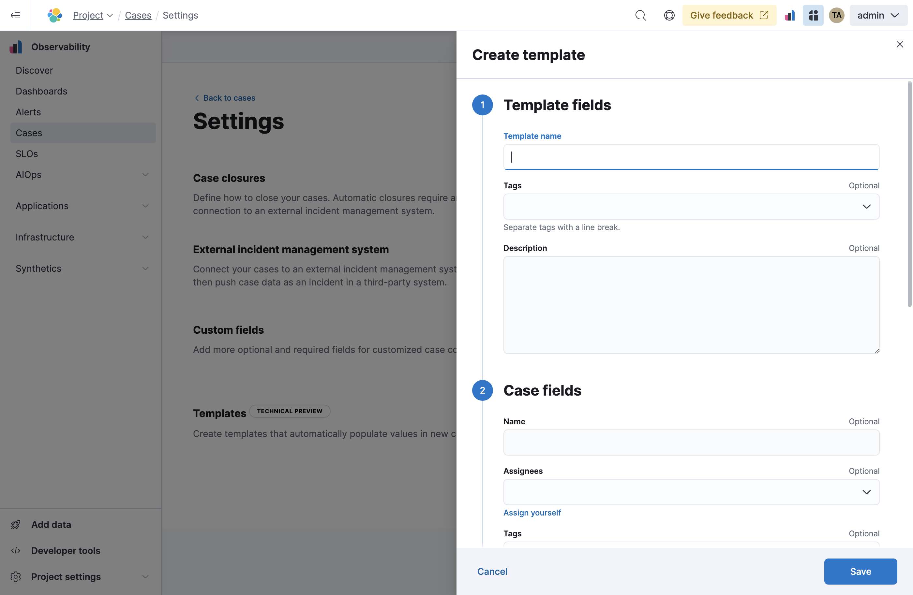

Configure case settings
editRequired role
The Editor role or higher is required to create and edit connectors. To learn more, refer to Assign user roles and privileges.
To access case settings in an Elastic Observability Serverless project, go to Cases → Settings.
Case closures
editIf you close cases in your external incident management system, the cases will remain open in Elastic Observability until you close them manually (the information is only sent in one direction).
To close cases when they are sent to an external system, select Automatically close cases when pushing new incident to external system.
External incident management systems
editIf you are using an external incident management system, you can integrate Elastic Observability cases with this system using connectors. These third-party systems are supported:
- IBM Resilient
- Jira (including Jira Service Desk)
- ServiceNow ITSM
- ServiceNow SecOps
- Swimlane
- TheHive
- Webhook - Case Management
You need to create a connector to send cases, which stores the information required to interact with an external system. For each case, you can send the title, description, and comment when you choose to push the case — for the Webhook - Case Management connector, you can also send the status and severity fields.
To add, modify, or delete a connector, you must have the Admin user role for the project (or a more permissive role).
After creating a connector, you can set your cases to automatically close when they are sent to an external system.
Create a connector
edit- From the Incident management system list, select Add new connector.
-
Select the system to send cases to: ServiceNow, Jira, IBM Resilient, Swimlane, TheHive, or Webhook - Case Management.
-
Enter your required settings. For connector configuration details, refer to:
- Click Save.
Edit a connector
editYou can create additional connectors, update existing connectors, and change the connector used to send cases to external systems.
You can also configure which connector is used for each case individually. Refer to Create and manage cases.
To change the default connector used to send cases to external systems:
- Select the required connector from the Incident management system list.
To update an existing connector:
- Click Update <connector name>.
- Update the connector fields as required.
Custom fields
editYou can add optional and required fields for customized case collaboration.
To create a custom field:
-
In the Custom fields section, click Add field.

- You must provide a field label and type (text or toggle). You can optionally designate it as a required field and provide a default value.
When you create a custom field, it’s added to all new and existing cases. In existing cases, new custom text fields initially have null values.
You can subsequently remove or edit custom fields on the Settings page.
Templates
editThis functionality is in technical preview and may be changed or removed in a future release. Elastic will work to fix any issues, but features in technical preview are not subject to the support SLA of official GA features.
You can make the case creation process faster and more consistent by adding templates. A template defines values for one or all of the case fields (such as severity, tags, description, and title) as well as any custom fields.
To create a template:
-
In the Templates section, click Add template.
 - You must provide a template name and case severity. You can optionally add template tags and a description, values for each case field, and a case connector.
When users create cases, they can optionally select a template and use its field values or override them.
If you update or delete templates, existing cases are unaffected.